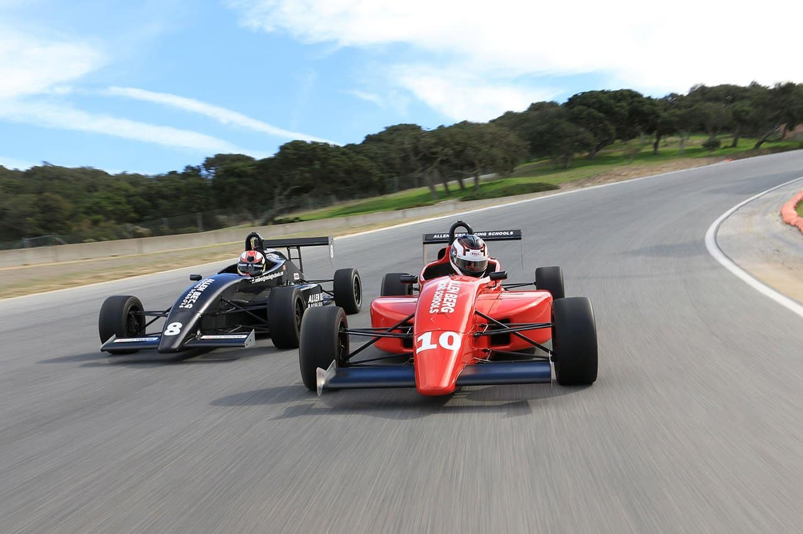

<!doctype html>
<html lang="en">

<head>
    <meta charset="utf-8">
    <meta name="description" content="width=device-width, initial-scale=1">

    <title>F1 Driving Experience</title>
    <meta name="description" content="Your information of what to expect when in training and driving.">

    <link href="https://cdn.jsdelivr.net/npm/bootstrap@5.3.3/dist/css/bootstrap.min.css" 
    rel="stylesheet" integrity="sha384-QWTKZyjpPEjISv5WaRU9OFeRpok6YctnYmDr5pNlyT2bRjXh0JMhjY6hW+ALEwIH" crossorigin="anonymous">

    <link href="https://cdn.jsdelivr.net/npm/bootstrap-icons@1.11.0/font/bootstrap-icons.css" rel="stylesheet">
    <!-- Internal CSS -->
</head>

<body id="page-top">
    <script src="https://cdn.jsdelivr.net/npm/bootstrap@5.3.3/dist/js/bootstrap.bundle.min.js" integrity="sha384-YvpcrYf0tY3lHB60NNkmXc5s9fDVZLESaAA55NDzOxhy9GkcIdslK1eN7N6jIeHz" crossorigin="anonymous"></script>
</body>

</html>       

    <!-- Introduction of content and Header -->
    <header>
        <center>
        
        </center>
        <h1 class="text-center">F1 Driving Experience</h1>
            <h3 class="text-center" class="lead">Where fans enjoy racing!</h3>
            <hr>
        <!-- Slider -->
        <div id="carouselExampleCaptions" class="carousel slide">
            <div class="carousel-indicators">
                <button type="button" data-bs-target="#carouselExampleCaptions" data-bs-slide-to="0" class="active" aria-current="true" aria-label="Slide 1"></button>
                <button type="button" data-bs-target="#carouselExampleCaptions" data-bs-slide-to="1" aria-label="Slide 2"></button>
                <button type="button" data-bs-target="#carouselExampleCaptions" data-bs-slide-to="2" aria-label="Slide 3"></button>
                <button type="button" data-bs-target="#carouselExampleCaptions" data-bs-slide-to="3" aria-label="Slide 4"></button>
                <button type="button" data-bs-target="#carouselExampleCaptions" data-bs-slide-to="4" aria-label="Slide 5"></button>
            </div>

            <div class="carousel-inner">
                <div class="carousel-item active">
                    
                    <div class="carousel-caption d-none d-md-block">
                        <h5>Learn the physical training</h5>
                        <p>Everyone will take part in the experience of how an F1 driver trains in different types of workouts.</p>
                    </div>
                </div>
            
                <div class="carousel-item">
                    
                    <div class="carousel-caption d-none d-md-block">
                        <h5 style="color:black;">Learn the fundamentals of the track</h5>
                        <p style="color: black;">Learn from professionals to understand the racing lines, braking points, and speeds.</p>
                    </div>
                </div>

                <div class="carousel-item">
                    
                    <div class="carousel-caption d-none d-md-block">
                        <h5>Practice using our racing simulator</h5>
                        <p>Use our racing simulator to practice the track with a close to real-life simulator with suspension to feel the track before stepping into a race car.</p>
                    </div>
                </div>

                <div class="carousel-item">
                    
                    <div class="carousel-caption d-none d-md-block">
                        <h5>Practice with a professional on track</h5>
                        <p>Drive different level of race cars with a professional to learn racing lines, breaking points, and understand the g-force levels. Each car will be driven using 5 laps.</p>
                    </div>
                </div>

                <div class="carousel-item">
                    
                    <div class="carousel-caption d-none d-md-block">
                        <h5>Immerse yourself in an F1 racecar!</h5>
                        <p>Going through the training gets you to immerse yourself in an F1 car to take the raw g-force and speeds around the track in 5 laps.</p>
                    </div>
                </div>           
            </div>

            <button class="carousel-control-prev" type="button" data-bs-target="#carouselExampleCaptions" data-bs-slide="prev">
                <span class="carousel-control-prev-icon" aria-hidden="true"></span>
                <span class="visually-hidden">Previous</span>
            </button>
            <button class="carousel-control-next" type="button" data-bs-target="#carouselExampleCaptions" data-bs-slide="next">
                <span class="carousel-control-next-icon" aria-hidden="true"></span>
                <span class="visually-hidden">Next</span>
            </button>

        </div>
        <hr>

        <section class="text-center" id="information">
            
            <h3>Information:</h3>

            <svg xmlns="http://www.w3.org/2000/svg" width="30" height="30" fill="currentColor" class="bi bi-info-circle" viewBox="0 0 16 16">
                <path d="M8 15A7 7 0 1 1 8 1a7 7 0 0 1 0 14m0 1A8 8 0 1 0 8 0a8 8 0 0 0 0 16"/>
                <path d="m8.93 6.588-2.29.287-.082.38.45.083c.294.07.352.176.288.469l-.738 3.468c-.194.897.105 1.319.808 1.319.545 0 1.178-.252 1.465-.598l.088-.416c-.2.176-.492.246-.686.246-.275 0-.375-.193-.304-.533zM9 4.5a1 1 0 1 1-2 0 1 1 0 0 1 2 0"/>
            </svg>   
        
            <h3>Track History: Big Willow Springs Speed Way</h3>

            

            <p>
                People will learn and drive at Willows Springs International Speedway. This track takes you in the desert in a super-fast 2.5-mile / nine-turn road racing circuit, 
                patterned after the great courses and road racing traditions of Europe, and is unchanged from its original 1953 configuration.
            </p>

            <br><br>

            <h3>Is it safe to enroll F1 Driving Experience under safety considerations?</h3>

            <svg xmlns="http://www.w3.org/2000/svg" width="30" height="30" fill="currentColor" class="bi bi-cone" viewBox="0 0 16 16">
                <path d="M7.03 1.88c.252-1.01 1.688-1.01 1.94 0l2.905 11.62H14a.5.5 0 0 1 0 1H2a.5.5 0 0 1 0-1h2.125z"/>
            </svg>

            <p>
                We recommend always driving on a dry day rather than on a wet day, to the risks of drivers who are not experienced driving in the rain. 
                If rain conditions are harsher on a day you are scheduled for the F1 Driving Experience, it may be rescheduled.
            </p>

            <p>
                There are also ambulances and a hospital center nearby on the track if a driver does get injured or feels sick under certain conditions of g-force levels. 
            </p>

        </section>
    </header>
</body>